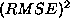
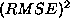
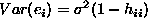
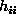
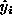
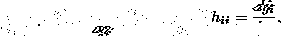
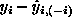

Residuals
Residuals are vital to regression because they establish the credibility
of the analysis. Never accept a regression analysis without having checked the
residual plots.
Residuals come in many flavors:

- Vanilla residual:
 .
.
- Standardized residual:

- Studentized residual: .
The plain residual and its plot is useful for checking how well the
regression line fits the data, and in particular if there is any systematic lack of fit, for example curvature.
But, what value should be considered as a big residual?
- Problem: retains the scale of the response variable (Y).
- Answer: standardize by an estimate of the variance of the residual.
- Know,
 estimated by  .
estimated by  .
- But, , which is more than just .
- Turns out,  .
- Use standardized residual, .
- The quantity,  is fundamental to regression.
- A heuristic explanation of (visually we are dragging a
single point upward and measuring how the regression line follows):

- Think about the observed value, and  the
estimated value (ie the point on the regression line).
- For a fixed perturb a little bit,
how much do you expect to move?
- If moves as much as then clearly has the
potential to drive the regression - so is leveraged.
- If hardly moves at all then clearly has
no chance of driving the regression.
- In other words is the measure of ``leverage''.
- More precisely

and it depends only on the x-values.
- Understanding leverage is essential in regression because leverage
exposes the potential role of individual data points. Do you want your
decision to be based on a single observation?
Standardized residuals
Standardized residuals allow the residuals to be compared on the
``standard scale''. Plus/Minus 2 indicates something unusual, Plus/Minus 3
indicates something really out of the ordinary and Plus/Minus 4 is something
from outer space (it just shouldn't happen).
Subtle point
Problem.
The standardized residuals still start off with  and the problem is that if is really leveraged then it will drag the regression line
toward it, influencing the estimate of the residual itself.
and the problem is that if is really leveraged then it will drag the regression line
toward it, influencing the estimate of the residual itself.
Solution.
Fit the regression line excluding and base the residual on
 , where  denotes the fit based on
a regression line estimated excluding .
denotes the fit based on
a regression line estimated excluding .
Notes.
- This is the leave one out idea and is the basis for much
computationally intensive modern statistics. The leave one out
idea is often called ``jackknifing''.
- This ``leave one out'' residual can be used as a basis for judging the
predictive ability of a model. Clearly the lower the residual the better, and
the sum of the squares of the jackknifed residuals is called the PRESS
statistics, or Predicted Sum of Squares.
- The studentized residual, , is
just a standardized jackknifed residual. This
is an extremely good way of judging how much of an outlier in the y-direction
a point is.
- from now on we will use the studentized residual plot to judge
outliers in the y-direction.
- A new plot. Leverage vs. studentized residual. Points that drive
the regression have big leverage and extreme studentized residuals.
- The delete one idea works pretty well, except when there is a second data
point lying close by. In this case the second point can drive the regression line, masking the effect of the first point. This leads to the idea
of ``delete two'' etc.